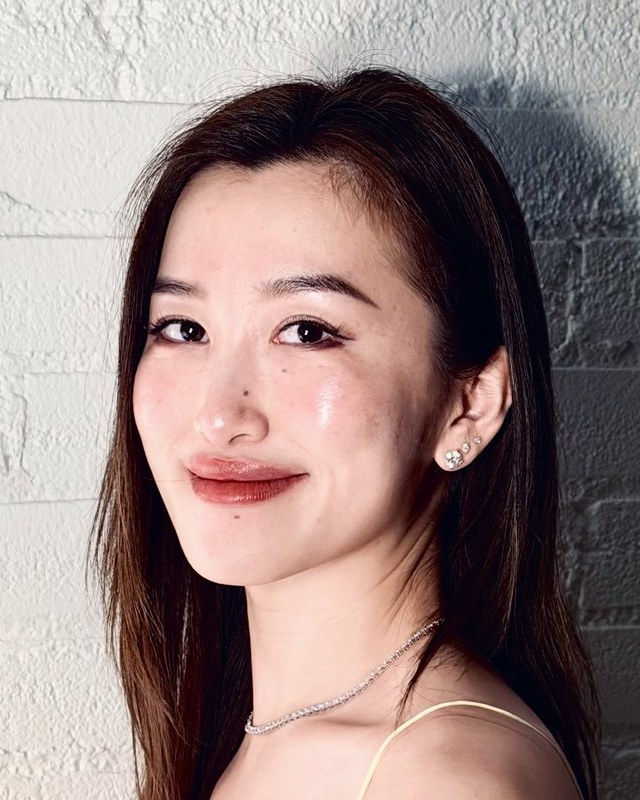

Suki Yang
I run Icon Trading, a quantitative crypto trading firm, and I write about markets, ambition, and the systems we mistake for choices.
Writing
I am writing a book in public, one chapter at a time. These five are a good place to start.
Everybody Knows
Why a price gap that looks obvious can stay open, starting from an arbitrage I ran between two exchanges in 2019.
How a Market Is Born
Trading cards, token sales and IPOs do the same job, the first distribution of an asset, and that is where a market begins.
Make Haste Slowly
Trust as a ledger that neither side can audit, and what an unprepared pitch costs with someone you have just met.
The Moat
When anyone can write code and build a product, what is a company's moat, and why would anyone believe one fund over another?
What Does Your Day Look Like?
How a founder's work moves from code and models to people, and how to make that work visible to investors.
About
I build systems at the intersection of trading, infrastructure, and online behavior. My work focuses on how capital flows through markets and how attention shapes liquidity.
- Icon TradingFounder and CEO
- LMAOFounder Pantera CapitalQuantitative research Electric CapitalData science DiDiPricing data science
- UC Berkeley HaasMFE